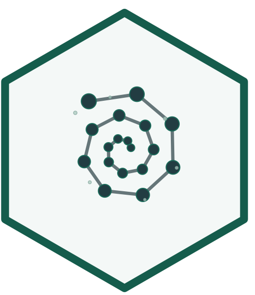

emergenceModelR is an educational R package for simulating, visualizing, and explaining simplified models of emergence, self-organization, complexity, cellular automata, agent interactions, and network growth.
The package combines R functions, core tutorials, and a detailed theory guide to help learners explore how system-level patterns can arise from local rules, interactions, feedback, and network structure.
Overview
Emergence refers to situations in which higher-level patterns arise from interactions among lower-level components. These patterns are not usually imposed by a central controller. Instead, they develop through repeated local interactions.
emergenceModelR provides simplified simulations that make this idea visible. The package is designed for teaching, conceptual exploration, science communication, and academic portfolio development.
The central idea is:
Complex system-level patterns can arise from simple local rules and interactions.
Main features
The package provides educational toy simulations for:
- cellular automata and local update rules;
- self-organization on spatial grids;
- agent interactions and group-level movement;
- network growth and preferential attachment;
- information, entropy, and complexity-oriented metrics;
- visualization of emergence simulations;
- comparison of different emergence mechanisms.
Important note
This package does not fully model real biological, cognitive, social, ecological, neural, or conscious systems.
The models are simplified educational abstractions. They are designed to help users understand concepts such as local rules, feedback, diffusion, agent interaction, network structure, entropy, and system-level pattern formation.
It is better to say:
The simulations illustrate emergence-like patterns.
than:
The simulations prove emergence in real systems.
Installation
You can install the development version from GitHub:
if (!requireNamespace("remotes", quietly = TRUE)) {
install.packages("remotes")
}
remotes::install_github("NoushinN/emergenceModelR")Then load the package:
Quick example
This example simulates a simple cellular automaton using Rule 30.
library(emergenceModelR)
ca <- simulate_cellular_automata(
rule = 30,
n_cells = 51,
steps = 50
)
head(ca)Visualize the pattern:
plot_emergence_sim(
ca,
x = "cell",
y = "step",
value = "state",
type = "raster"
)Summarize the output:
measure_emergence(
ca,
value_col = "state",
time_col = "step"
)Package structure
The package website is organized into three main sections.
| Section | Purpose |
|---|---|
| Reference | Formal documentation for each R function |
| Core Tutorials | Step-by-step examples showing how to run, visualize, compare, and interpret simulations |
| Theory Guide | Deeper conceptual chapters explaining emergence, self-organization, complexity, information, networks, life, consciousness, and responsible use |
Core functions
| Function | Purpose |
|---|---|
simulate_cellular_automata() |
Simulates simple local update rules that generate global patterns |
simulate_self_organization() |
Simulates local feedback, diffusion, and spatial pattern formation |
simulate_agent_interactions() |
Simulates local agent interactions and group-level dynamics |
simulate_network_growth() |
Simulates random or preferential network growth |
measure_emergence() |
Computes simple diversity, entropy, variability, and temporal-change summaries |
plot_emergence_sim() |
Visualizes simulation outputs |
Core tutorials
The Core Tutorials provide practical, code-focused walkthroughs.
They show how to:
- run each simulation function;
- inspect the output structure;
- visualize model results;
- compare parameter settings;
- use
measure_emergence(); - interpret outputs carefully.
Tutorial topics include:
- Getting Started with
emergenceModelR - Cellular Automata Tutorial
- Self-Organization Tutorial
- Agent Interactions Tutorial
- Network Growth Tutorial
- Measuring Emergence Tutorial
- Comparing Emergence Models Tutorial
Theory guide
The Theory Guide provides deeper conceptual background for the package.
It explains topics such as:
- what emergence means;
- weak and strong emergence;
- self-organization;
- complexity and information;
- cellular automata and local rules;
- agent-based emergence;
- networks and emergence;
- measuring emergence;
- emergence, life, and consciousness;
- limitations and responsible use.
The theory chapters are designed to connect the code examples to broader ideas in complexity science, artificial life, origin-of-life research, cognitive science, and philosophy of mind.
Suggested use
This package may be useful for:
- teaching emergence and complexity;
- introducing computational modeling;
- demonstrating local-rule systems;
- comparing different emergence mechanisms;
- supporting discussions about life, cognition, and consciousness;
- building an academic or technical portfolio;
- creating examples for science communication.
Responsible interpretation
The simulations in this package are toy models. Their purpose is conceptual clarity, not realism.
The package does not claim to:
- prove emergence in nature;
- simulate real biological life;
- model consciousness directly;
- measure true complexity in a final sense;
- replace empirical scientific models.
Instead, it helps users explore how local rules and interactions can generate system-level patterns.
Documentation
The full package website is available here:
https://noushinn.github.io/emergenceModelR/
The source code is available here:
Related projects
This package can complement related educational projects on origin of life, consciousness, artificial life, and complexity.
For example:
| Project theme | Relationship |
|---|---|
| Origin of life | Emergence helps explain how organized life-like systems may arise from interacting components |
| Consciousness theories | Emergence provides a framework for thinking about system-level cognitive organization |
| Complexity science | Emergence connects local rules, feedback, networks, and global patterns |
| Artificial life | Toy simulations help explore life-like organization in simplified systems |
Citation
If referencing this project, please cite:
Nabavi, N. *emergenceModelR: An Educational R Package for Simulating Simplified Models of Emergence and Complexity [DOI